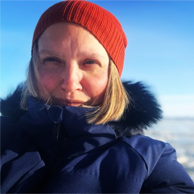

Brit Myers, MS, MMA, PMP · Environmental Systems Consultant · Vashon Island, WA
I work with research programs, environmental organizations, and mission-driven institutions to design coordination systems, sustain scientific networks, and provide the operational continuity that keeps critical work moving.
Start a conversation
About
My practice sits at a rare intersection: I have operated inside federal research funding architecture at significant scale, coordinated globally recognized scientific networks, contributed to environmental policy and governance, built philanthropic and grants infrastructure, and designed AI-enabled operational systems — not as adjacent skills accumulated across a career, but as an integrated way of working.
"I work at the interface points between systems — where science meets policy, where funding meets operations, where institutional knowledge meets the next phase of work."
I'm based on Vashon Island in Puget Sound, embedded in the Pacific Northwest environmental and research community. I bring that embeddedness — relationships, local knowledge, regional credibility — alongside national and international program experience to every engagement.
Credentials
Practice Areas
Six practice areas — each grounded in direct, accountable experience, not adjacent familiarity.
I have operated inside NSF funding architecture — not alongside it — as PI on a $9.2M cooperative agreement and full lifecycle PM of a $6M multi-institutional grant. I understand how program officers think, how reporting works, and how to keep complex research programs moving.
Operational architect — not staff support — for the Sea Ice Prediction Network and Permafrost Carbon Network. I build and sustain the coordination infrastructure that keeps distributed scientific communities functioning across institutions, time zones, and funding cycles.
Organizations lose critical momentum during transitions — leadership turnover, grant close-out, maternity leave, reorganization. I provide the senior operational presence that stabilizes these moments: reading an organization quickly, holding what needs to be held, and restoring systems that enable continuity.
My credibility as a convener rests on understanding the underlying science, policy, and institutional dynamics — not just logistics. I've facilitated across tribal interfaces, federal interagency networks, multi-sector environmental governance, and international research communities.
Strategy and systems for the mission-driven, science, and environmental lane — not general marketing. I understand the underlying work, not just the messaging. Grant development, narrative strategy, research translation, and the systems that make communications sustainable.
Practical AI integration for lean mission-driven teams — not transformation consulting. Built and deployed in a real operating context. Workflow automation, knowledge management, meeting systems, communications infrastructure, and documentation generation.
What sets this apart
These aren't credentials accumulated in parallel — they're capability combinations that took years to build and are genuinely difficult to replicate.
PI on a $9.2M NSF Cooperative Agreement and full lifecycle management of a 5-year, $6M multi-institutional NSF grant — simultaneously. Including NSF desk audit participation. This opens doors to clients who need someone who has operated inside the federal science funding system, not alongside it.
Operational architect — not staff support — of the Sea Ice Prediction Network and Permafrost Carbon Network. Internationally recognized programs coordinating distributed observational and modeling communities. Essentially non-replicable without direct program history.
Washington Marine Spatial Planning facilitation, oil spill legislation engagement, NOAA California Current ecosystem work, Puget Sound Seabird Survey, 6+ years Seattle Aquarium Beach Naturalist, and co-leadership of a watershed-embedded business on Vashon Island. For Pacific Northwest institutions, this is relationship capital — not just a resume line.
Accountable leadership across science, philanthropy, policy, governance, nonprofit, and applied commerce — not as a generalist moving through sectors, but as someone who has held real accountability in each. The rarest combination, and the hardest to replicate.
MS in Arts & Administration, Engagement Manager for the Microsoft Art Collection, Development Manager for Intiman Theatre. An unusual fluency in narrative, community engagement, and institutional culture that most environmental systems leaders lack entirely — and that makes for a stronger convener across diverse stakeholder communities.
Working together
Engagements take four shapes — each suited to a different kind of need. The best relationships often begin with a defined project and evolve into something more sustained.
8–20 hours/month. Strategic, operational, or communications presence without a full hire.
3–12 months. Leadership transitions, grant cycles, specific program milestones.
Convening design, grant strategy, CRM build, engagement plan, communications system.
Fractional Program Manager, Engagement Director, or Operations Lead within your structure.
Strongest fit
I'm most useful when brought in early enough to shape systems, not just execute within them.
Get in touch
The best engagements start with a real conversation about the coordination or systems problem you're trying to solve. I'm happy to talk through whether and how I might be useful before any commitment.
Send a note